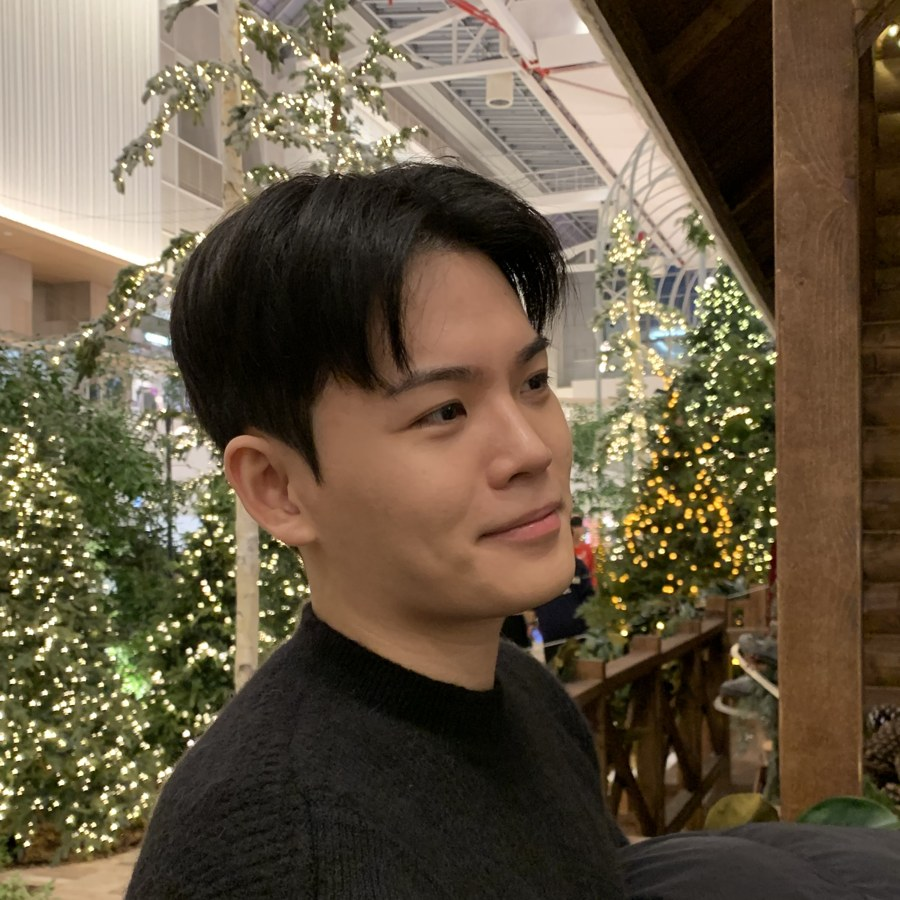

KAIST
Graduate research
Language-model knowledge, internal representations, and evaluation
I study the gap between what language models learn and what they can actually use.
I am an M.S. student at the School of Computing, KAIST, co-advised by Jihee Kim and Dongman Lee. My work examines factual recall, internal representations, and how learned knowledge shapes model behavior.

How models store, retrieve, and use knowledge.
How models reproduce distributions and human behavior.
Accepted at SocialAgent and UserSim workshops, NeurIPS 2026
Preprint
Findings of EMNLP 2026
Graduate research
Language-model knowledge, internal representations, and evaluation
Undergraduate research
Graph learning and multimodal imaging
AI Engineer
LLM-based translation and customer-inquiry tools
Founder
Designer fashion-sharing platform